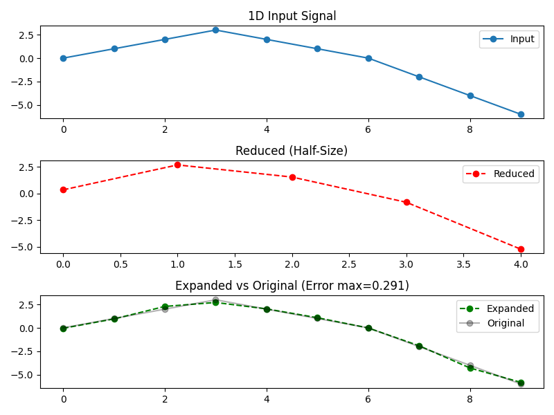
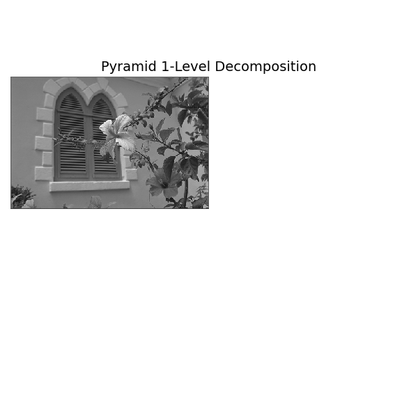
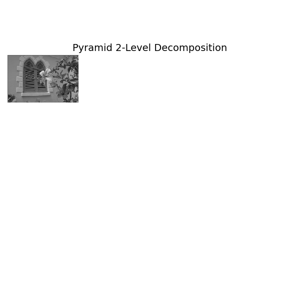
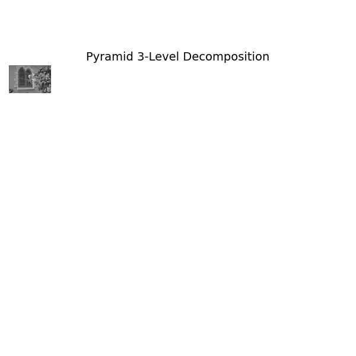
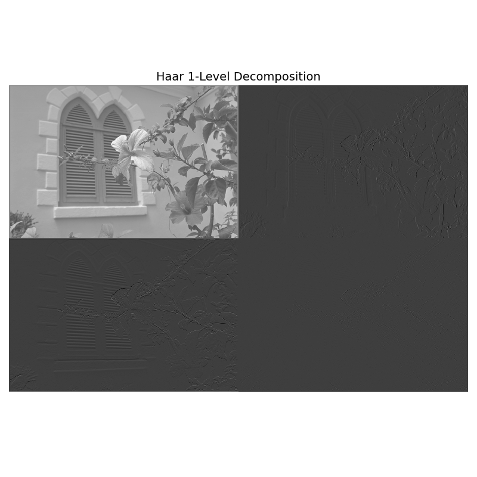
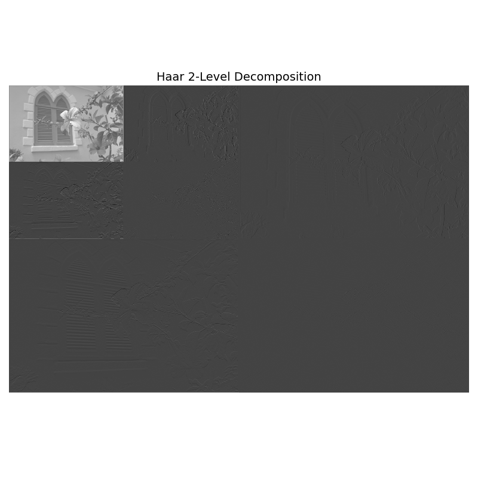
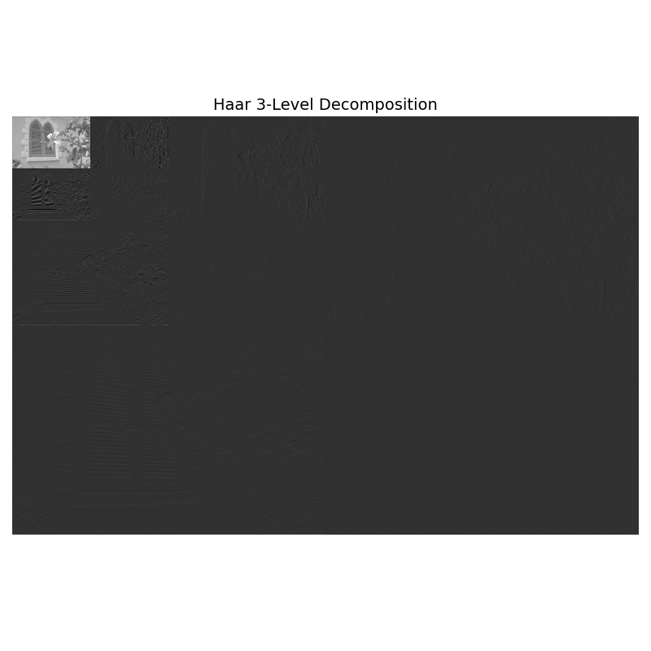

Decompose Module#
This example demonstrates how to use the ‘decompose’ module.
Pyramid decomposition (reduce & expand) in 1D and 2D.
Haar wavelet decomposition (analysis & synthesis) in 2D.
You can download this example at the tab at right (Python script or Jupyter notebook.
Imports#
We import the required libraries and modules.
import numpy as np
import matplotlib.pyplot as plt
# For downloading and handling the image
import requests
from io import BytesIO
from PIL import Image
# Pyramid decomposition utilities
from splineops.decompose.pyramid import (
get_pyramid_filter,
reduce_1d, expand_1d,
reduce_2d, expand_2d
)
# Wavelet classes for 2D
from splineops.decompose.wavelets.haar import HaarWavelets
from splineops.decompose.wavelets.splinewavelets import (
Spline1Wavelets,
Spline3Wavelets,
Spline5Wavelets
)
1D Pyramid Decomposition#
Here is a 1D examples that involves data of length 10. We do a pyramid reduce-then-expand.
x = np.array([0.0, 1.0, 2.0, 3.0, 2.0, 1.0, 0.0, -2.0, -4.0, -6.0],
dtype=np.float64)
filter_name = "Centered Spline"
order = 3
g, h, is_centered = get_pyramid_filter(filter_name, order)
reduced = reduce_1d(x, g, is_centered)
expanded = expand_1d(reduced, h, is_centered)
error = expanded - x
print("[1D Pyramid Test]")
print(f"Filter: '{filter_name}' (order={order}), is_centered={is_centered}")
print("Input x:", x)
print("Reduced :", reduced)
print("Expanded :", expanded)
print("Error :", error)
fig, axs = plt.subplots(nrows=3, ncols=1, figsize=(8, 6))
axs[0].plot(x, 'o-', label='Input')
axs[0].set_title("1D Input Signal")
axs[0].legend()
axs[1].plot(reduced, 'o--', color='r', label='Reduced')
axs[1].set_title("Reduced (Half-Size)")
axs[1].legend()
axs[2].plot(expanded, 'o--', color='g', label='Expanded')
axs[2].plot(x, 'o-', color='k', alpha=0.3, label='Original')
axs[2].set_title(f"Expanded vs Original (Error max={np.abs(error).max():.3g})")
axs[2].legend()
plt.tight_layout()
plt.show()

[1D Pyramid Test]
Filter: 'Centered Spline' (order=3), is_centered=True
Input x: [ 0. 1. 2. 3. 2. 1. 0. -2. -4. -6.]
Reduced : [ 0.34065843 2.68175207 1.54133046 -0.83042701 -5.23331582]
Expanded : [-0.04459776 0.95501393 2.29130194 2.71324125 2.02602713 1.08397035
-0.01051075 -1.9097665 -4.28487695 -5.81974832]
Error : [-0.04459776 -0.04498607 0.29130194 -0.28675875 0.02602713 0.08397035
-0.01051075 0.0902335 -0.28487695 0.18025168]
Load and Normalize a 2D Image#
Here, we load an example image from an online repository. We convert it to grayscale in [0,1].
url = 'https://r0k.us/graphics/kodak/kodak/kodim07.png'
response = requests.get(url)
img = Image.open(BytesIO(response.content))
# Convert to numpy float64
image_color = np.array(img, dtype=np.float64)
# Normalize to [0,1]
image_color /= 255.0
# Convert to grayscale using standard weights
image_gray = (
image_color[:, :, 0] * 0.2989 +
image_color[:, :, 1] * 0.5870 +
image_color[:, :, 2] * 0.1140
)
ny, nx = image_gray.shape
print(f"Downloaded image shape = {ny} x {nx}")
# Plot the original grayscale image
plt.figure(figsize=(6, 6))
plt.imshow(image_gray, cmap='gray', interpolation='nearest', vmin=0, vmax=1)
plt.title("Original Grayscale Image", fontsize=14)
plt.axis('off')
plt.tight_layout()
plt.show()
Downloaded image shape = 512 x 768
2D Pyramid Decomposition#
Reduce and expand the input image using spline pyramid decomposition.
filter_name = "Spline"
order = 3
g, h, is_centered = get_pyramid_filter(filter_name, order)
reduced_2d = reduce_2d(image_gray, g, is_centered)
expanded_2d = expand_2d(reduced_2d, h, is_centered)
error_2d = expanded_2d - image_gray
max_err = np.abs(error_2d).max()
print("[2D Pyramid Test]")
print(f"Filter: '{filter_name}' (order={order}), is_centered={is_centered}")
print("Reduced shape:", reduced_2d.shape)
print("Expanded shape:", expanded_2d.shape)
print(f"Max error: {max_err}")
# Retrieve the pyramid filter parameters (using "Spline" filter with order 3)
filter_name = "Spline"
order = 3
g, h, is_centered = get_pyramid_filter(filter_name, order)
# Compute pyramid levels:
# Level 0: Original image, and each subsequent level is obtained by reducing the previous one.
num_reductions = 3
levels = []
current = image_gray # image_gray is already loaded from previous cell.
levels.append(current) # Level 0: Original image
for _ in range(num_reductions):
current = reduce_2d(current, g, is_centered)
levels.append(current)
original_shape = image_gray.shape # (ny, nx)
[2D Pyramid Test]
Filter: 'Spline' (order=3), is_centered=False
Reduced shape: (256, 384)
Expanded shape: (512, 768)
Max error: 0.5062710854288006
1-Level Decomposition#
canvas1 = np.ones(original_shape, dtype=image_gray.dtype) # white canvas
h1, w1 = levels[1].shape
canvas1[:h1, :w1] = levels[1] # Place the reduced image in the top-left corner
plt.figure(figsize=(6, 6))
plt.imshow(canvas1, cmap='gray', vmin=0, vmax=1, interpolation='nearest')
plt.title("Pyramid 1-Level Decomposition", fontsize=14)
plt.axis('off')
plt.tight_layout()
plt.show()

2-Level Decomposition#
canvas2 = np.ones(original_shape, dtype=image_gray.dtype) # white canvas
h2, w2 = levels[2].shape
canvas2[:h2, :w2] = levels[2] # Place the reduced image in the top-left corner
plt.figure(figsize=(6, 6))
plt.imshow(canvas2, cmap='gray', vmin=0, vmax=1, interpolation='nearest')
plt.title("Pyramid 2-Level Decomposition", fontsize=14)
plt.axis('off')
plt.tight_layout()
plt.show()

3-Level Decomposition#
canvas3 = np.ones(original_shape, dtype=image_gray.dtype) # white canvas
h3, w3 = levels[3].shape
canvas3[:h3, :w3] = levels[3] # Place the reduced image in the top-left corner
plt.figure(figsize=(6, 6))
plt.imshow(canvas3, cmap='gray', vmin=0, vmax=1, interpolation='nearest')
plt.title("Pyramid 3-Level Decomposition", fontsize=14)
plt.axis('off')
plt.tight_layout()
plt.show()

2D Wavelet Decomposition#
We demonstrate wavelet decomposition (analysis) and reconstruction (synthesis) using 2D Haar wavelets on a grayscale image.
haar2d = HaarWavelets(scales=3)
coeffs = haar2d.analysis(image_gray)
recon_haar = haar2d.synthesis(coeffs)
err_haar = recon_haar - image_gray
max_err_haar = np.abs(err_haar).max()
print("[Wavelets 2D Haar Test]")
print(f"Max error after 3-scale decomposition: {max_err_haar}")
# Helper function for visualization
def pyramid_with_quadrant_embedding_levels(wavelet, inp, num_levels):
"""
Perform multi-scale wavelet analysis in-place so that at each level the
new coarse approximation is stored in the quadrant corresponding to the
previous level's coarse region.
Parameters
----------
wavelet : AbstractWavelets instance
A wavelet instance (e.g., HaarWavelets) with the desired number of scales.
inp : np.ndarray
Input 2D array (e.g., grayscale image).
num_levels : int
The number of decomposition levels to perform.
Returns
-------
coeffs : np.ndarray
Final coefficient array (same size as inp) with the pyramid layout.
"""
out = np.copy(inp)
ny, nx = out.shape[:2]
for level in range(num_levels):
# Process the current top-left subarray
sub = out[:ny, :nx]
sub_out = wavelet.analysis1(sub)
out[:ny, :nx] = sub_out
# Update region size for next level (halve each dimension)
nx = max(1, nx // 2)
ny = max(1, ny // 2)
return out
[Wavelets 2D Haar Test]
Max error after 3-scale decomposition: 1.3322676295501878e-15
1-Level Decomposition#
wavelet1 = HaarWavelets(scales=1)
coeffs1 = pyramid_with_quadrant_embedding_levels(wavelet1, image_gray, 1)
plt.figure(figsize=(8, 8))
plt.imshow(coeffs1, cmap='gray', interpolation='nearest')
plt.title("Haar 1-Level Decomposition", fontsize=14)
plt.axis('off')
plt.tight_layout()
plt.show()

2-Level Decomposition#
wavelet2 = HaarWavelets(scales=2)
coeffs2 = pyramid_with_quadrant_embedding_levels(wavelet2, image_gray, 2)
plt.figure(figsize=(8, 8))
plt.imshow(coeffs2, cmap='gray', interpolation='nearest')
plt.title("Haar 2-Level Decomposition", fontsize=14)
plt.axis('off')
plt.tight_layout()
plt.show()

3-Level Decomposition#
wavelet3 = HaarWavelets(scales=3)
coeffs3 = pyramid_with_quadrant_embedding_levels(wavelet3, image_gray, 3)
plt.figure(figsize=(8, 8))
plt.imshow(coeffs3, cmap='gray', interpolation='nearest')
plt.title("Haar 3-Level Decomposition", fontsize=14)
plt.axis('off')
plt.tight_layout()
plt.show()

Total running time of the script: (0 minutes 15.395 seconds)